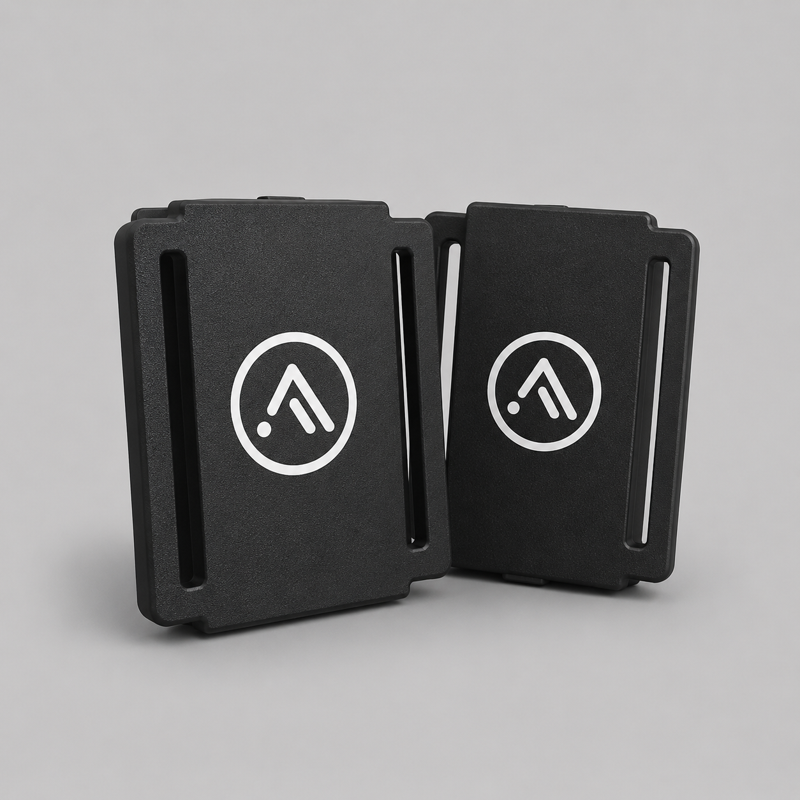
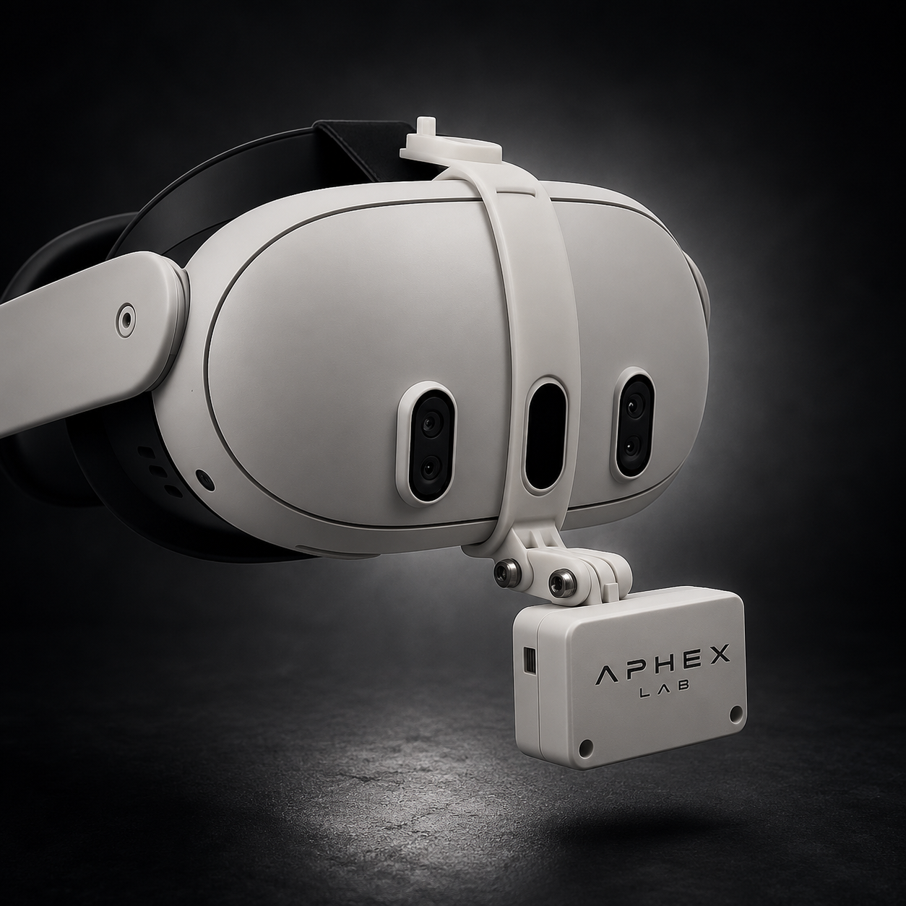

Sistemas de rastreamento corporal (full body tracking) e captura de expressões faciais para realidade virtual. Engenharia, precisão e design em cada tracker.
A Aphex Lab é um laboratório de hardware especializado em tecnologia de captura de movimento (mocap) e dispositivos inovadores para criadores, desenvolvedores e entusiastas.
Unimos engenharia, precisão e design para entregar performance real no mundo físico — do chip ao case impresso, cada tracker é pensado para desaparecer no seu corpo e aparecer no seu avatar.
Full body tracking é só o nosso primeiro capítulo: somos um laboratório dedicado a criar hardware e tecnologias de imersão para a realidade virtual e experiências interativas como um todo.
Conhecer a Linha Full Body
Kit mínimo recomendado: 6 trackers (peito, cintura, duas coxas e dois tornozelos). Kits de 8 e 10 trackers também disponíveis para mais precisão.
Compatível com os jogos abaixo — alguns funcionam nativamente, outros com mods da comunidade.
* Compatibilidade depende da versão do SlimeVR e de cada jogo/aplicativo. Os trackers Aphex Lab rodam o servidor SlimeVR (open source), o que garante compatibilidade com todo o ecossistema já usado pela comunidade de full body tracking. Alguns títulos usam mods de terceiros.
Faça motion capture, anime personagens e desenvolva experiências usando os trackers Aphex Lab com os softwares que você já usa.
Estamos expandindo o catálogo. Estes produtos ainda estão em desenvolvimento — sem especificações ou preços definidos.

Além do full body tracking, a Aphex Lab desenvolve acessórios que ampliam a sua presença em VR — como o Mouthtracker Expressions, que captura expressões faciais em tempo real e as leva direto ao seu avatar.
Todo o catálogo é desenhado para funcionar em conjunto: mesma identidade de hardware, mesmo padrão de qualidade e o mesmo suporte de ponta a ponta.
Ver Mouthtracker Expressions